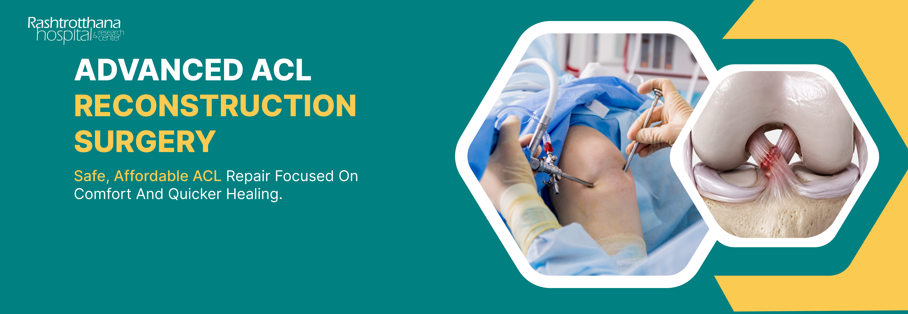
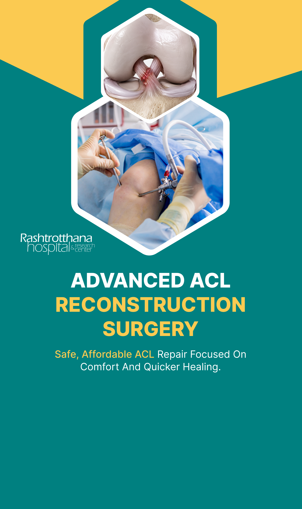
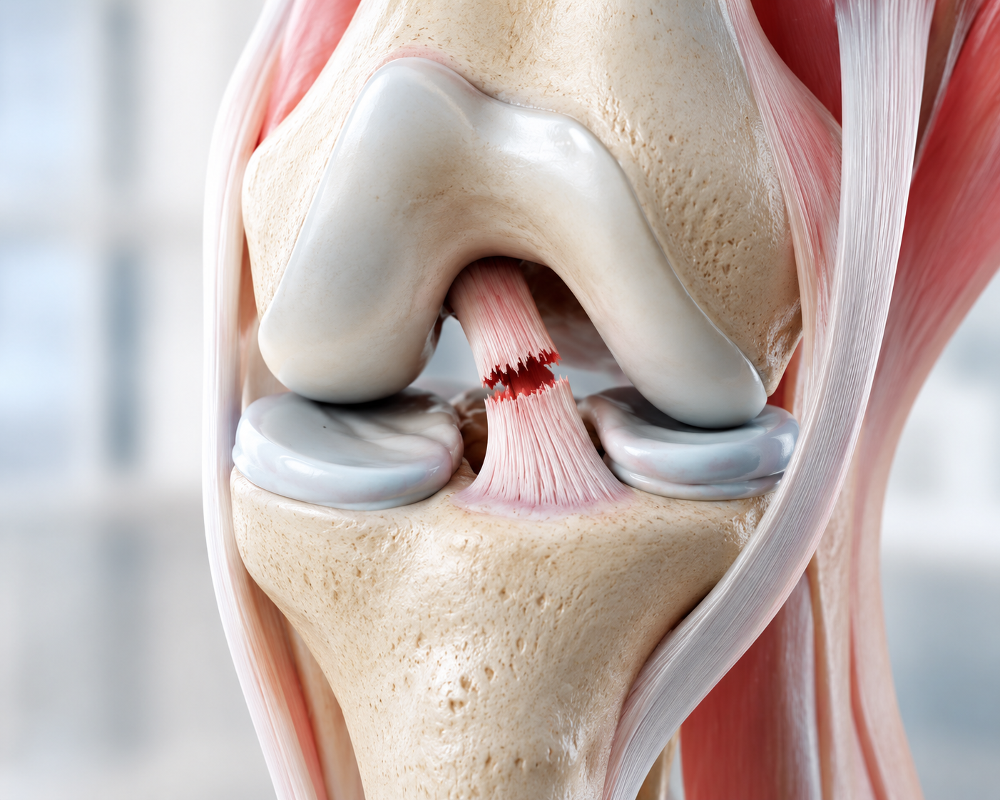
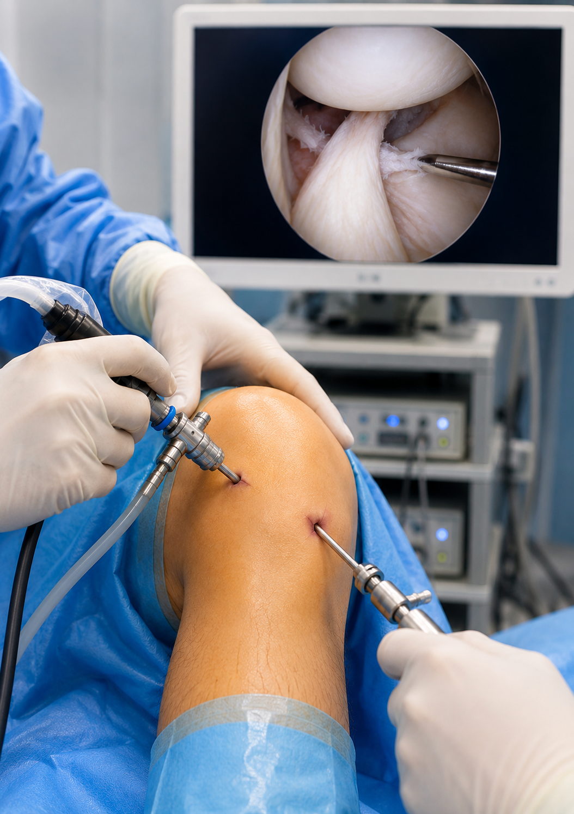
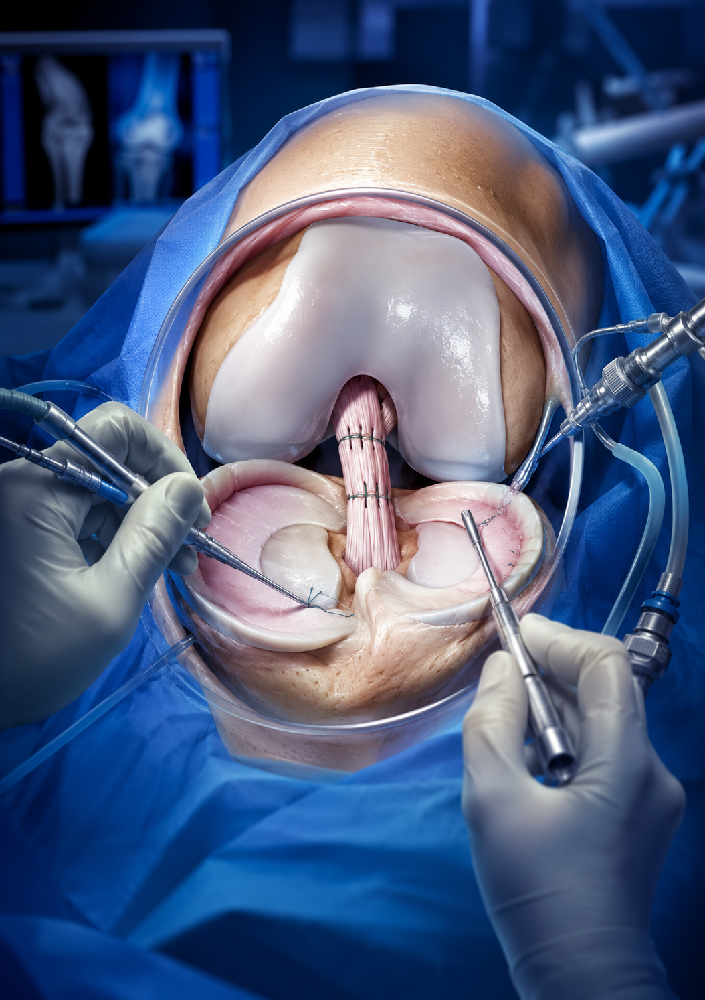

ACL (Anterior Cruciate Ligament) Reconstruction is a surgical procedure to rebuild the torn or ruptured anterior cruciate ligament - one of the key ligaments that stabilises the knee joint. It is most commonly required after sports injuries, sudden twisting movements or high-impact trauma that causes the ligament to tear completely.
At Rashtrotthana Hospital, we provide advanced ACL Reconstruction Surgery in Bangalore using arthroscopic (keyhole) techniques - performed by experienced orthopaedic and sports medicine surgeons - with personalised rehabilitation focused on full functional recovery and return to sport.

Free Knee Pain Clinic · Bangalore
Are you struggling with knee pain while walking, climbing stairs or standing for long periods? Our specialised Knee Pain Clinic offers a free consultation to help you understand the cause of your pain and explore the right treatment options.
Not every knee pain requires surgery. Early consultation can help you reduce pain, improve mobility, and avoid further joint damage.
Procedures We Offer
Our sports medicine and orthopaedic surgeons assess your injury grade, activity level, and goals to recommend the most suitable graft and surgical technique.

The gold standard for ACL repair - performed through small keyhole incisions using an arthroscope and camera. A graft (from the patient's own tendon or a donor) is used to reconstruct the torn ligament, restoring knee stability with minimal tissue disruption.

Many ACL injuries occur alongside meniscus tears or cartilage damage. Our surgeons address all concurrent injuries in a single arthroscopic procedure - ACL reconstruction combined with meniscus repair or cartilage restoration - for comprehensive knee recovery.
At Rashtrotthana Hospital, our orthopaedic and sports medicine surgeons provide advanced ACL Reconstruction Surgery in Bangalore with individualised treatment plans tailored to each patient's injury severity, age, activity level, and return-to-sport goals.
Why Choose Us
We combine arthroscopic surgical precision with sports medicine expertise to deliver safe, accurate, and athlete-centred ACL care - from diagnosis to full recovery.
We make ACL Surgery in Bangalore accessible and affordable with smooth insurance coordination and transparent billing at every step.
Located in Rajarajeshwari Nagar, Bangalore - with in-house physiotherapy and sports rehabilitation support for a complete recovery journey after ACL surgery.
Step-by-Step Process
Your Step-by-Step ACL Treatment & Recovery Journey in Bangalore
Our sports medicine specialists perform clinical examination, review MRI scans, and assess ligament stability to confirm ACL tear grade and determine the optimal surgical plan.
Minimally invasive arthroscopic ACL reconstruction is performed using the chosen graft - with precision graft placement to restore full knee stability and function.
Patients receive structured pain management, cryotherapy, and early mobilisation guidance to reduce swelling, prevent stiffness, and begin a safe healing process.
A progressive physiotherapy and sports rehabilitation programme rebuilds strength, proprioception, and confidence - guiding patients back to sport, exercise, and active daily life.
At Rashtrotthana Hospital, our team is dedicated to safe surgical outcomes, structured rehabilitation, and helping patients achieve full return to sport after ACL Reconstruction Surgery in Bangalore.
Patient Questions
Answers to the most common questions about ACL tears, surgery, and recovery.